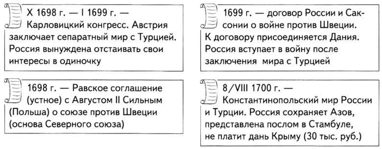
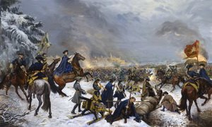
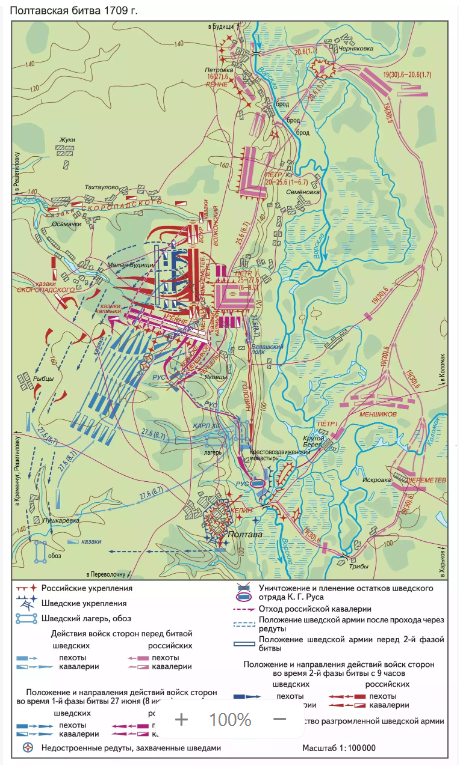
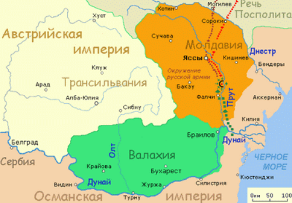
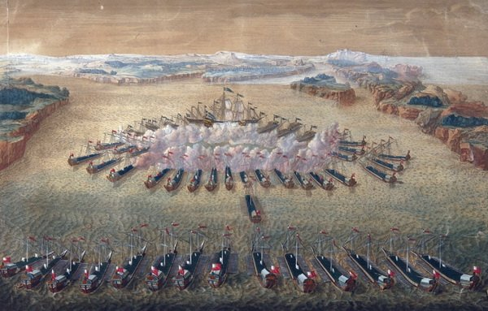
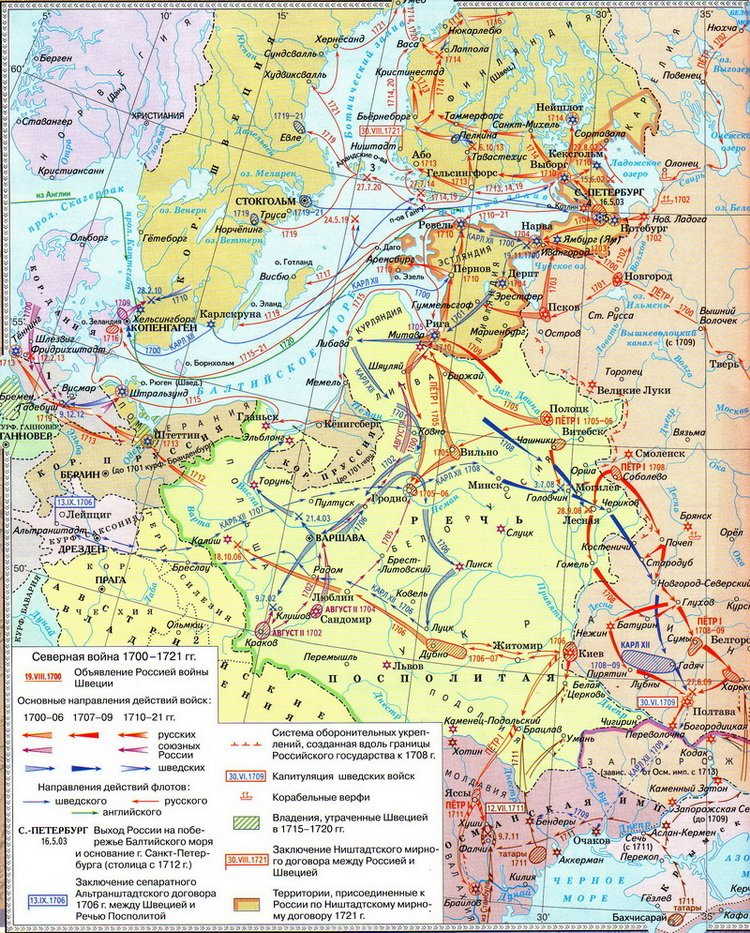

Если вы говорите, что война причина зол, то мир будет их исцелением.
Северная война России со Швецией длилась долгие 21 года с 1700 года по 1721 год. Ее итоги были весьма положительны для нашей страны, ведь в результате войны Петру удалось "прорубить окно в Европу". Россия осуществила главную свою цель - закрепилась на Балтийском море. Однако, ход войны был весьма не однозначным и стране пришлось нелегко, но результат стоил всех страданий.
Причины Северной войны

Формальным поводом для начала северной войны стало укрепление позиций Швеции в Балтийском море. К 1699 году сложилась ситуация, в которой практически вся береговая линия моря находилась под контролем Швеции. Это не могло не вызывать беспокойство ее соседей. В результате в 1699 году между странами, обеспокоенными усилением Швеции, был заключен Северный Союз, который был направлен против владычества Швеции в Балтике. Участниками Союза были: Россия, Дания и Саксония (король которой был одновременно правителем Польши).
Нарвская конфузия
На рисунке: Нарвская конфузия- Карл 12
Северная война для России началась 19 августа 1700 года, но начало ее для союзников было просто кошмарным. Принимая во внимание, что Швецией правил еще совсем ребенок карл 12, которому едва исполнилось 18 лет, ожидалось, что шведская армия угрозы собой не представляет и будет легко разгромлена. На деле же оказалось, что Карл 12 полководец достаточно сильный. Понимая абсурдностью войны на 3 фронта, он решает разбить противников по одиночке. В течение нескольких дней он нанес сокрушительное поражение Дании, которая фактически вышла из войны. После этого настал черед Саксонии. Август 2 в это время осаждал Ригу, которая принадлежала Швеции. Карл 2 нанес своему противнику страшное поражение, вынудив того отступать.
Россия фактически осталась в война один на один с противником. Петр 1 решил нанести поражение противнику на его территории, но ни коем образом не учел, что Карл 12 стал не только талантливым, но и опытным полководцем. Петр отправляет войска в Нарву, шведскую крепость. Общая численность русских войск - 32 тысячи человек и 145 артиллерийских орудий. Карл 12 на помощь своему гарнизону отправил дополнительно 18 тысяч солдат. Сражение получилось скоротечным. Шведы ударили в стыки между русскими подразделениями и прорвали оборону. Более того, на сторону противника бежали многие иностранцы, которых Петр так ценил в российской армии. Это поражение современные историки называют "нарвская конфузия".
По итогам нарвского сражения Россия потеряла 8 тысяч человек убитыми и всю артиллерию. Это был кошмарный итог противостояния. В этот момент Карл 12 проявил благородство, либо допустил просчет. Он не преследовал отходящих русских, полагая, что без артиллерии и с такими потерями война для армии Петра окончена. Но он ошибался. Русский царь объявил новый набор в армию и начал восстановлять спешными темпами артиллерию. Для этого были даже переплавлены колокола церквей. Также Петр занялся реорганизацией армии, поскольку наглядно увидел, что в текущий момент его солдаты не могут сражаться на равных с противниками страны.
Полтавская битва
Накануне битвы
Решение о переходе к наступлению принято 18(29) июня военным советом во главе с Петром I. В ночь с 19(30) июня на 20 июня (1 июля) российская армия переправилась через реку Ворскла и заняла позиции на её правом берегу, у села Семёновка (ныне Семьяновка Полтавского района Полтавской области, Украина), в 8 км от Полтавы, а 25 июня (6 июля) приблизилась на расстояние около 5 км от шведского лагеря, находившегося в селе Пушкарёвка (ныне в городской черте Полтавы) и близ него.
Для размещения российской пехоты и артиллерии на плоской возвышенности сооружён земляной ретраншемент; кавалерия расположилась главным образом к западу от него на том поле, где произошло решающее столкновение армий. Для защиты российских позиций под прямым углом друг к другу возведены две линии редутов (поперечная из 6 редутов, вынесенная вперёд – из 4, при этом 2 передовых редута не успели достроить) между Малобудищинским и Яковчанским лесами, а к югу от ретраншемента – ряд вспомогательных земляных укреплений.
Силы сторон
Шведская армия насчитывала около 26,6 тыс. человек (из них 24,8 тыс. человек находились в лагере, около 1,8 тыс. – ниже по течению Ворсклы) и имела 41 орудие разных калибров и типов (7 из них нельзя было использовать из-за отсутствия подходивших для них зарядов). Была ослаблена разгромом в сражении при Лесной в сентябре/октябре 1708 г. двигавшегося к ней из Риги шведского корпуса под командованием пехотного генерала А. Л. Левенгаупта (к шведскому лагерю подошли только 6,5 тыс. человек из состава корпуса без артиллерии и обоза). Шведов должны были поддержать казаки Запорожского войска (до 3 тыс. человек, в расположение шведской армии в 1708 обманом приведены гетманом И. С. Мазепой) и союзные шведам казаки Низового войска Запорожского (до 7 тыс. человек), однако часть из них не была введена в бой, а другие бежали в самом начале сражения.
Российская армия превосходила шведскую, включая в свой строевой состав около 57,2 тыс. человек: 32,6 тыс. человек пехоты, в том числе 2,2 тыс. человек находилось в гарнизоне Полтавской крепости (командир – полковник А. С. Келин) (при подсчётах численности пехоты учтено, что реальный состав, согласно документам, мог составлять около 80 % от списочного), около 24,3 тыс. человек кавалерии и около 300 человек при полевой артиллерии, а также 282 орудия (командующий артиллерией – генерал-фельдцейхмейстер Я. В. Брюс) (Кротов. 2018. С. 297, 321). Кроме того, в распоряжении Петра I имелось до 23 тыс. человек нерегулярных войск: казаки – Запорожского войска под командованием гетмана И. И. Скоропадского, донские, терские и яицкие, а также калмыки, татары и валахи.
Ход основной битвы
Первая фаза сражения
Для отвлечения внимания российского командования от направления главного удара нерегулярный конный Валашский полк (не более 1 тыс. человек) атаковал с юга российские войска близ ретраншемента. Одновременно основные силы шведской армии [около 8,2 тыс. человек пехоты, 7,8 тыс. человек кавалерии; 4 орудия 3-фунтового калибра; командующие – Карл XII и генерал-фельдмаршал К. Г. Реншёльд (Реншильд)] атаковали 2-ю линию российских редутов (захватили 2 недостроенных передовых, от 3-го отбиты его гарнизоном).
Российская кавалерия [21 тыс. человек; командующий – генерал-поручик барон К. Э. фон Рённе (в русских документах – Рен)] и гарнизоны редутов (4730 человек списочного состава, около 3,8 тыс. человек с учётом некомплекта; командир – бригадир С. В. Айгустов) вступили в бой со шведами. Затем по приказу Петра I, находившегося в ретраншементе, кавалерия организованно отступила: её основная часть примкнула к северному фасу ретраншемента (около 17 тыс. человек; командующий – генерал-поручик Р. Х. Боур), а 4 драгунских полка и «шквадрон» сдвоенного состава [около 3,6 тыс. человек; командующий – генерал-поручик И. К. (Я. Х.) Хейнске (в русских источниках – Генскин, Геншхин)] – к южному фасу. Вслед за этим возглавляемые Карлом XII и К. Г. Реншёльдом бо́льшая часть шведской пехоты (12 батальонов, или около 5,5 тыс. человек) и кавалерия прорвались за редуты, оказавшись в ловушке между ними и российским ретраншементом. Другая часть шведской пехоты [6 батальонов, или 2,6 тыс. человек; командующий – генерал-майор К. Г. Рус (Рос; в русских источниках ошибочно – Розен)] сначала была отброшена от российских редутов их гарнизонами, затем разгромлена стоявшими у южного фаса ретраншемента 4 драгунскими полками, «шквадроном» сдвоенного состава, а также выведенными из ретраншемента 5 пехотными батальонами (2,5 тыс. человек по спискам, реально около 2 тыс. человек); общее командование действиями против соединения Руса осуществлял генерал от кавалерии светлейший князь А. Д. Меншиков.
После прорыва за поперечную линию из 6 редутов в атаку на ретраншемент с юго-западного направления двинулись 10 шведских батальонов пехоты из 12 имевшихся (не более 4,5 тыс. человек; командующий А. Л. Левенгаупт), но, подойдя на расстояние около 30 саженей (65 м), были вынуждены отступить под артиллерийским и ружейным огнём гарнизона российского ретраншемента к Малобудищинскому лесу на противоположном краю поля битвы. После этого успеха Пётр I решил перейти в общее контрнаступление.
Вторая фаза сражения
Российская пехота под общим командованием царя и генерал-фельдмаршала Б. П. Шереметева построилась в 2 линии перед ретраншементом. Монарх с коня устно призвал войска храбро сражаться «за государство, Петру врученное, за род свой, за народ всероссийский» [Письма и бумаги императора Петра Великого. Т. 9, вып. 1. Москва ; Ленинград, 1950. № 3251; речь Петра I сохранилась в двух вариантах, сходных по существу, но текстуально различных, – в передаче архиепископа Черниговского и Новгород-Северского Иоанна (Максимовича) (1710) и архиепископа Псковского Феофана (Прокоповича) (не ранее 1716, наиболее известный вариант)].
Полтавская битва 1709. Карта подготовлена при участии П. А. Кротова.
В 1-й линии находились 24 батальона (не более 10 тыс. человек с учётом имевшегося некомплекта), в промежутках между батальонами – полковая артиллерия пехотных дивизий генералов от инфантерии князя А. И. Репнина и Л. Н. фон Алларта (24 пушки 3-фунтового калибра), 20 пушек т. н. Гвардейской бригады генерал-поручика князя М. М. Голицына Старшего, до 13 пушек драгунских полков и точно неизвестное количество переносных пушек-мортир; во 2-й линии – 18 батальонов (7,5 тыс. человек). На правом фланге выстроились 11 кавалерийских полков и Генеральский «шквадрон» (7,7 тыс. человек; командующий Р. Х. Боур), на левом – 6 драгунских полков (4,5 тыс. человек; командующий А. Д. Меншиков). К краям обоих флангов и позади них встала часть нерегулярной конницы.
К северному фасу ретраншемента отступил от линии редутов и занял место в качестве ближнего резерва, перекрывая дорогу, шедшую к северу к бродам и переправам через Ворсклу, конный корпус из 6 драгунских полков [свыше 4 тыс. человек; командующий – генерал-майор князь Г. С. Волконский (из рода Волконских)], рядом также разместились резервные 4 драгунских полка и домовая конная рота Б. П. Шереметева (3,2 тыс. человек; командующий И. К. Хейнске). В ретраншементе остался резерв – часть пехотной дивизии А. Д. Меншикова: 11 батальонов, 300 артиллеристов (около 4,5 тыс. человек наличного состава, 32 орудия; командующий – генерал-майор И. Я. Гинтер), также там пребывали несколько сотен больных из разных воинских частей. Ещё 10 российских батальонов пехоты (до 3,2 тыс. человек по спискам, около 2,6 тыс. человек с учётом некомплекта) занимали позиции у вспомогательных земляных укреплений, сооружённых к югу от ретраншемента. Конные (до 10 тыс. человек) и пешие (до 6 тыс. человек) отряды сохранивших верность царю левобережных казаков Запорожского войска находились главным образом близ северного гребня балки Побыванка и села Тахтаулово (ныне Полтавского района), остальные казаки, а также калмыки, татары и валахи – в Малобудищинском лесу и в других местах.
У противоположного от расположения российских войск края поля 10 батальонов шведской пехоты во главе с А. Л. Левенгауптом, ранее атаковавших ретраншемент после прорыва мимо линии редутов справа, выстроились для сражения в боевую линию; ещё 2 батальона, не успев присоединиться к главным силам пехоты после обхода линии редутов слева, остались в тылу на левом фланге (всего около 5,5 тыс. человек). Шведская кавалерия скучилась на правом фланге и следовала также позади линии пехоты.
Выстроенные на поле в боевой порядок российские полки начали общее наступление, вынудив шведов двинуться навстречу: инициатива в битве перешла к российской армии. Сблизившись, пехотные линии начали обмен ружейными залпами, который перерос в бой с применением холодного оружия; примерно через полчаса несколько шведских батальонов обратились в бегство. Одновременно российская кавалерия левого фланга под командованием А. Д. Меншикова ожесточённо сражалась со значительной частью шведской кавалерии, сдерживая её натиск и попытку прорыва. Российская кавалерия протяжённого правого крыла во главе с Р. Х. Боуром неуклонно обходила шведскую линию пехоты справа, вынуждая её, чтобы избежать окружения, постепенно загибать фланг. Вскоре, спасаясь от вероятного выхода российской конницы в тыл, шведская пехота левого фланга первой из шведской боевой линии обратилась в бегство – назад к Малобудищинскому лесу. Пётр I находился на линии огня с 1-й линией пехоты; одна пуля пробила его шляпу-треуголку (в 2,5 см от виска), вторая попала в деревянное основание седла, третья оставила вмятину на медном нагрудном офицерском щитке. Описание прорыва шведской гвардией 1-й линии российской пехоты является литературным вымыслом писателя П. Н. Крёкшина (Дневник военных действий Полтавской битвы // Документы Северной войны. 1909. С. 282).
Российские регулярные войска преследовали бежавших шведов до Иванчинцкого ручья в Малобудищинском лесу; оставшиеся в живых на поле боя шведские воины были окружены и пленены.
Третья фаза сражения
В строе пехотного каре и отдельными группами шведы выступили из Малобудищинского леса, где собрались после бегства с места Полтавской битвы, по направлению к селу Пушкарёвка. Их преследовали российская лёгкая нерегулярная конница и отдельные эскадроны регулярной кавалерии.
Потери сторон
В Полтавской битве шведы потеряли почти половину строевых чинов армии – 9,2 тыс. человек убитыми (по официальным итогам подсчёта тел), около 3 тыс. человек пленными, в том числе были пленены К. Г. Реншёльд и 1-й министр и начальник Походной королевской канцелярии К. Пипер.
Российская регулярная армия понесла значительно меньший урон: согласно неполным данным печатной реляции, 1344 человека убитыми (с учётом выявленного числа скончавшихся от ран и пропавших без вести не менее 1572 человек погибших) и 3290 человек ранеными.
Прутский поход
На рисунке: Прутский поход
После Полтавы Северный союз был вновь актуален. Ведь Петр нанес поражение, которое давало шанс на общий успех. В результате этого Северная война продолжилась тем, что русские войска овладели городами Рига, Ревель, Корел, Пернов и Выборг. Тем самым Россия фактически завоевала все восточное побережье балтийского моря.
Карл 12, который находился в Турции, еще активнее стал склонять султана выступить против России, поскольку понимал, что над его страной нависла большая опасность. В результате в 1711 году Турция вступила в войну, что заставила армию Петра ослабить хватку на Севере, так как теперь Северная война заставляла его воевать на два фронта.
Петр лично решил провести прутский поход, чтобы разбить неприятеля. Недалеко от реки Прут армия Петра (28 тысяч человек) попала в окружение турецкой армией (180 тысяч человек). Положение было просто катастрофичным. Окружен был сам царь, а также все его приближенные и русское войско в полном составе. Турция могла завершить северную войну, но не сделала этого... Не следует рассматривать это, как просчет султана. В мутной воде политической жизни каждый ловит сою рыбу. Разбить Россию означало укрепить Швецию, причем укрепить очень сильно, создав из нее сильнейшую державу континента. Для Турции же было более выгодным, чтобы Россия и Швеция продолжили воевать ослабевая друг друга.
Вернемся к событиям, которые принес прутский поход. Петр был настолько шокирован происходящим, что отправляя своего посла на переговоры о мире, говорил тому, чтобы тот соглашался на любые условия, кроме потери Петрограда. Так же был собран огромный выкуп. В результате султан согласился на мир, по условиям которого Турция получала назад Азов, Россия уничтожает черноморский флот и не препятствует возвращению в Швецию короля карла 12.В ответ на это Турция полностью отпустила русские войска, в полном снаряжении и со знаменами.
В результате, Северная война, исход которой после Полтавской битвы казался предрешенным, получила новый виток. Это усложняло войну и требовало гораздо больше времени для победы.
Морские сражения Северной войны
Одновременно с сухопутными сражениями северная война велась и на море. Морские сражения были также достаточно массовыми и кровопролитными. Важное сражение той войны состоялось 27 июля 1714 года у мыса Гангут. В этом сражении эскадра Швеции была практически полностью уничтожена. Весь флот этой страны, который учувствовал в сражении у Гангута, был уничтожен. Это было страшное поражение для шведов и великолепный триумф для русских. В результате этих событий, Стокгольм был практически полностью эвакуирован, поскольку все опасались вторжения России уже вглубь Швеции. Фактически победа у Гангута стала первой крупной морской победой России!
На рисунке: Морские сражения - Гангутская битва
Следующее знаменательное сражение произошло также 27 июля, но уже 1720 года. Случилось это недалеко от острова Гренгам. Это морское сражение также завершилось безоговорочной победой российского флота. Следует отметить, что в составе шведский флотилии были представлены английские корабли. Связано это было с тем, что Англия решила поддержать Шведов, поскольку было понятно, что последней долго не продержаться в одиночку. Естественно, поддержка Англии была не официальной и в войну она не вступила, но корабли свои "любезно" представила Карлу 12.
Ништадский мир
Победы России на море и на суши вынудили шведское правительство пойти на мирные переговоры, соглашаясь фактически на все требования победителя, поскольку Швеция стояла на пороге полного разгрома. В результате в 1721 году был заключен договор между странами - Ништадский мир. Северная война после 21 года боевых действий была завершена. По ее итогам Россия получила:
- территорию Финляндии до Выборга
- территории Эстляндии, Лифляндии и Ингерманландии
Фактически Петр 1 этой победой закрепил право своей страны на выход в Балтийское море. Долгие годы войны окупились сполна. Россия одержала выдающуюся победу, в результате которой были решены многие политические задачи государства, которые стояли перед Россией еще со времен Ивана 3. Ниже представлена подробная карта северной войны.
На рисунке: Северная война 1700-1721гг-карта
Северная война позволила Петру "прорубить окно в Европу", а Ништадский мир закрепил за Россией это "окно" официально. Фактически Россия подтвердила свой статус великой державы, создав предпосылки для того, чтобы все страны Европы активно прислушивались к мнению России, которая к тому моменту уже стала Империей.